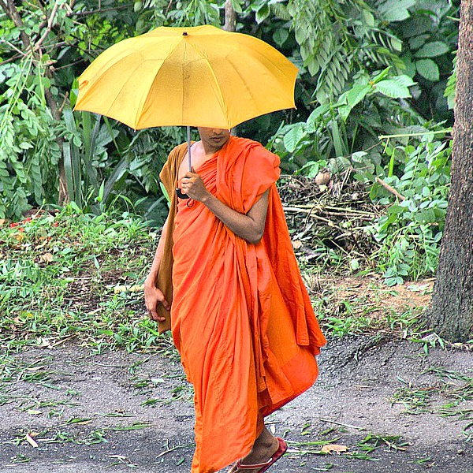
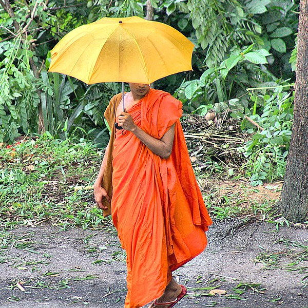

Staten Island's "Little Sri Lanka"
What is Sri Lanka?
 
 
In Sinhala, the language of the majority, Sri means "blessed" and Lanka is the name of the island. Prior to being called Sri Lanka, the country was referred to as Ceylon.
Overview
Sri Lanka's culture mixes modern elements with traditional aspects and is known for its regional diversity. The history and development of the island stems from immigration, trade, and colonial invasion. These factors lead to the formation of many ethnic groups, each with their own language and religious traditions.
History
Sri Lanka became independent of colonial rule in 1948. Ethnic and religious differences combined with the exclusive policies of the Sinhala-dominated central government led to escalating ethnic & language conflicts, including the on-going civil war in which Tamil rebels are fighting for an independent nation in the northern and eastern regions of the island.
Language
There are three official languages in Sri Lanka: Sinhala (which bears the country's namesake), Tamil, and English. Sinhala is the language majority. Tamil is widely spoken by Muslims as well as ethnic Tamils. English is the language of commerce and business.